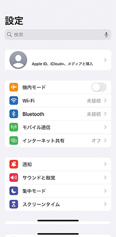

機器とルーターが接続済みの場合
-
以下にスマートフォンの接続先情報が表示されます。表示されているSSIDがエアコンを接続したルーターのSSIDと一致していることを確認してください。異なる場合は、エアコンを接続したルーターにスマートフォンを接続してください。接続方法はスマートフォンの取扱説明書をご確認ください。

-
iOS14以降を搭載のスマートフォンでは、初回登録時に「次へ」をタップすると以下のメッセージが表示されますので、「OK」をタップしてください。「OK」をタップしないと次の手順で機器が表示されません。「許可しない」をタップした場合は、iOSのローカルネットワークの設定で通信を許可するよう変更してください。

>
リモコンを使ってエアコンを接続モードにする
エアコンをアクセスポイントモード（APモード）にする
- リモコンの「停止」ボタンを押して運転を停止します。
- 「メニュー」ボタンを押します。
- 「設定」を選択します。
- 「無線機能」を選択します。
- 「入/切設定」を選択します。
- 「入」を選択し、エアコンに向けて「決定」ボタンを押します。
- 「ルーター接続」を選択します。
- 「スマートフォンで接続」を選択して、エアコンに向けて「決定」ボタンを押します。
- 接続を中断したいときは「キャンセル」を選択してください。
- 「 スマートフォンで接続」を選択したあとに「ボタンで接続」を続けて選択すると“ピピピッ”と音が鳴り、操作を受け付けません。
- 詳しくは各エアコンの取扱説明書をご確認ください。
アクセスポイントモードに設定されているか、室内機で確認する
- 室内機のランプが約5秒間隔で1回点滅しながら“ピッ”と音が鳴ることを確認してください。

ランプはエアコンにより異なります。 - ランプは以下の状態を繰り返します。

- この状態は10分で終了します。10分以上経過した場合は「1」からやり直してください。
- ランプは以下の状態を繰り返します。
情報シールを確認する
情報シールを確認します。情報シールの位置は、エアコンの取扱説明書をご確認ください。
確認方法
エアコンの前面パネルを開けて、無線LAN モジュールに貼られている情報シールを確認してください。

注意

禁止
無線LANの設定を確認するときは、不安定な台に乗らない
- 転倒などケガの原因になることがあります。
- 前面パネルを開けると情報シールが貼付されています。情報シールの位置は機種により異なりますので、エアコンの取扱説明書で位置を確認してください。

エアコンとスマートフォンを接続する
- スマートフォンの「設定」の「Wi-Fi」で、エアコンのSSIDである「 ME-**********」（*の部分は10桁の英数字）のSSIDを選択します。

- リモコンにメニューボタンが無い機種では、パスワード入力は必要ありません。パスワード入力を求められた場合は、機種選択を誤っていますので、機種選択からやり直してください。
- iOS搭載のスマートフォンでは以下の画面が表示されます。「＜設定」をタップしてスマートフォンの「設定」画面に進み、「Wi-Fi」をタップして上の「Wi-Fi」画面に進んでください。


- MyMUアプリの画面に戻って「次へ」をタップする
- エアコンとスマートフォンが接続できていることを確認してから、「次へ」ボタンをタップしてください。

- 「
次へ」をタップすると位置情報の使用許可を求めるメッセージが表示されます。「1度だけ許可」「Appの使用中は許可」あるいは「アプリの使用時のみ」「今回のみ」をタップしてください。「許可しない」をタップすると接続に失敗します。


-
接続に失敗した場合は右のメッセージが表示されます。「閉じる」をタップしてメッセージを閉じ、スマートフォンの設定画面でエアコンとスマートフォンの接続をやり直してください。ME-**********」が見つからない場合はアクセスポイントモードの設定からやり直してください。

- エアコンとスマートフォンが接続できていることを確認してから、「次へ」ボタンをタップしてください。
おしらせ
オートメーション機能で位置情報を使用する場合は、位置情報の許可を求める画面で「Appの使用中は許可」「アプリの使用時のみ」をタップし、「正確な位置情報」を「オン」にしてください。オートメーション機能については取扱説明書をご確認ください。
機器登録に失敗した場合
- 登録に失敗した場合は登録失敗のメッセージが表示されます。「閉じる」をタップして、表示される画面の内容をご確認ください。

- 「閉じる」をタップすると以下の画面が表示されます。内容を確認して、再度登録手順を実施してください。「戻る」をタップすると接続方法の選択画面に戻ります。
- 再度接続できなかった場合は「エアコンの無線設定のリセット方法」をタップ、表示される操作方法から機器をリセットしてください。

リモコンを使ってエアコンを接続モードにする
リモコンを操作し、エアコンをWPSモードにする
- リモコンの「停止」ボタンを押して運転を停止します。
- 「 メニュー」ボタンを押します。
- 「 設定」を選択します。
- 「 無線機能」を選択します。
- 「 入/切設定」を選択します。
- 「 入」を選択し、エアコンに向けて「決定」ボタンを押します。
- 「 ルーター接続」を選択します。
- 「 ボタンで接続」を選択して、エアコンに向けて「決定」ボタンを押します。
- 接続を中断したいときは「キャンセル」を選択してください。
- 「 ボタンで接続」を選択したあとに「スマートフォンで接続」を続けて選択すると“ピピピッ”と音が鳴り、操作を受け付けません。
- 詳しくは各エアコンの取扱説明書をご確認ください。
エアコンがWPSモードになっているか、室内機で確認する
- 室内機のランプが約5秒間隔で2回点滅しながら“ピッ、ピッ”と音が鳴ることを確認してください。
ランプはエアコンにより異なります。
- WPS接続が可能な状態です。
- ランプは以下の状態を繰り返します。

- この状態は2分で終了します。
エアコンとルーターの接続完了を確認する
- 室内機のランプが5秒間点灯し、“ ピーッ”と音が鳴ることを確認します。
- 接続完了です。サーバーとの初期通信が自動的に始まります。
- “ ピーッ、ピーッ、 ピーッ、ピーッ、ピーッ”と音が5回鳴る場合は接続に失敗しています。
- 接続できないときは「接続できないときは」をタップしてください。対処方法を説明した画面が表示されます。
- 次の対処方法を説明する画面の内容を確認して、再度登録手順を実施してください。「戻る」をタップすることで、接続方法の選択画面に戻ります。
- 再度登録を実施してもうまく接続できなかった場合は、エアコンの無線設定をリセットしてください。上の画面で「エアコンの無線設定のリセット方法」をタップすると下のリセット方法を説明する画面が表示されますので、内容を確認して、エアコンの無線設定をリセットしてください。
-
WPS接続完了後、「次へ」をタップすると位置情報の使用許可を求めるメッセージが表示24されます。「1度だけ許可」「Appの使用中は許可」あるいは「アプリの使用時のみ」「今回のみ」をタップしてください。「許可しない」をタップすると、次の画面でスマートフォンの接続先情報が表示されません。

おしらせ
オートメーション機能で位置情報を使用する場合は、位置情報の許可を求める画面で「Appの使用中は許可」「アプリの使用時のみ」をタップし、「正確な位置情報」を「オン」にしてください。オートメーション機能については取扱説明書をご確認ください。
「次へ」の画面表示
エモコアイ搭載エアコンの場合、「次へ」が表示されます。タップして操作を続けてください。